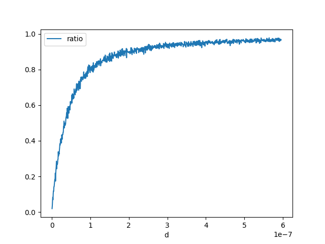

Note
Go to the end to download the full example code
Float Conversion#
I came up with the following question
 ?
What is the probability this holds?
?
What is the probability this holds?
Probability (float64)x == (float32)x#
Let’s evaluate how many time we draw a random double number equal to its float conversion.
import random
import numpy
import pandas
import matplotlib.pyplot as plt
rnd = numpy.random.random(100000000)
rnd.shape, rnd.dtype
((100000000,), dtype('float64'))
rnd32 = rnd.astype(numpy.float32).astype(numpy.float64)
equal = (rnd == rnd32).sum()
equal
5
It is very low. Let’s check the reverse is true.
rnd32b = rnd32.astype(numpy.float64).astype(numpy.float32)
equal = (rnd32b == rnd32).sum()
equal
100000000
Let’s study the distribution of the difference.
(-2.980232138849459e-08, 2.9802321166449985e-08)
(1.1139268396576085e-09, 0.9999999986646173)

(array([ 50084., 49888., 50312., 49675., 49832., 50009., 49574.,
50212., 50496., 49720., 49663., 50064., 49870., 49838.,
50070., 50319., 50049., 50248., 50330., 50044., 49693.,
49931., 49832., 49883., 49864., 50224., 50396., 49946.,
49889., 50088., 50111., 50187., 49853., 50042., 50091.,
50248., 50282., 50292., 50157., 49930., 49605., 49746.,
50122., 50477., 50342., 50179., 50038., 50229., 50206.,
49885., 50212., 49772., 50093., 49848., 49995., 50077.,
49769., 49851., 50022., 50067., 49933., 49907., 49772.,
49582., 49761., 49844., 49855., 49766., 50190., 50460.,
49980., 49967., 49882., 50417., 49804., 50208., 49839.,
50037., 49809., 50319., 50083., 49850., 50370., 49968.,
49940., 49769., 49762., 49945., 49878., 50043., 50340.,
50301., 50053., 49800., 50298., 49276., 50084., 50121.,
49997., 50151., 49585., 49694., 49529., 50238., 49716.,
49657., 50400., 50056., 50034., 50345., 49875., 49757.,
50197., 49960., 50026., 50069., 49741., 50104., 49857.,
50001., 50012., 50235., 50285., 49776., 50208., 50254.,
49416., 50074., 50073., 49630., 49592., 50173., 49989.,
49971., 49619., 49821., 49672., 49614., 50022., 50055.,
49977., 50504., 50069., 50191., 49926., 49941., 50356.,
49901., 49942., 50124., 50254., 50231., 50013., 50294.,
50057., 49963., 49935., 49759., 49989., 49889., 50084.,
49748., 49972., 49771., 50243., 50133., 50059., 50075.,
50309., 49676., 49389., 50085., 50424., 50151., 49965.,
50132., 50183., 50063., 50114., 50026., 49796., 50040.,
49838., 49399., 50073., 50334., 50102., 49955., 49984.,
50286., 50517., 49972., 49937., 50143., 49871., 50035.,
49731., 50140., 50328., 50045., 49973., 49919., 49812.,
49931., 49941., 49734., 49939., 49926., 50206., 49737.,
49954., 49890., 50435., 49708., 50404., 50078., 50078.,
50083., 49715., 50410., 50405., 49927., 49715., 50308.,
49959., 50000., 50110., 49725., 50393., 50205., 50212.,
49744., 50417., 50396., 50494., 50132., 49969., 49788.,
50140., 50027., 50068., 50252., 50149., 49874., 50125.,
49812., 50031., 50269., 49965., 49822., 99901., 99528.,
99732., 100118., 99449., 99458., 100725., 99454., 99849.,
100125., 100555., 99624., 100042., 99843., 100254., 100148.,
100083., 100096., 100617., 99950., 99751., 99610., 99998.,
99193., 100277., 99751., 99591., 99807., 100344., 99990.,
99593., 99385., 100349., 99740., 100189., 100558., 99714.,
99209., 99802., 99897., 100077., 100086., 99610., 100092.,
100536., 99816., 99667., 100860., 100582., 100364., 99856.,
99785., 100021., 100506., 99747., 100023., 99462., 100465.,
100070., 100081., 100059., 100366., 100041., 100402., 100384.,
100527., 99781., 100112., 99816., 99827., 100111., 99757.,
100186., 100270., 100190., 99456., 100222., 100290., 99826.,
99885., 99781., 100110., 100757., 99489., 99934., 99883.,
99863., 99445., 99804., 99466., 100139., 99992., 99712.,
100331., 100324., 99963., 99999., 99873., 99922., 100130.,
99598., 99469., 100012., 100079., 99873., 99497., 99563.,
99923., 100146., 99891., 100024., 100069., 99970., 100682.,
99657., 100642., 100222., 99231., 100382., 100639., 100743.,
99825., 100127., 100555., 100823., 150486., 150626., 149884.,
150469., 149127., 150518., 150084., 150085., 149827., 149862.,
150497., 150192., 150067., 149591., 150712., 150261., 149713.,
149599., 150154., 149610., 149756., 149884., 150326., 149201.,
150610., 150459., 149678., 149731., 149702., 149679., 150136.,
150275., 150204., 150008., 149724., 149556., 151000., 150039.,
149764., 150323., 150278., 149832., 149946., 149943., 149981.,
149459., 150438., 149535., 150202., 149794., 149825., 150721.,
149054., 150146., 149827., 150126., 150432., 150256., 150659.,
150642., 149442., 150730., 175400., 200258., 200344., 199889.,
200237., 200199., 200021., 199721., 200129., 200129., 199853.,
199342., 199866., 199144., 200315., 199968., 200135., 198787.,
200028., 201139., 200113., 199753., 199681., 200154., 199914.,
199984., 200590., 199794., 199905., 200436., 199439., 211625.,
249994., 249552., 249154., 250061., 250852., 250343., 249381.,
249623., 249700., 250020., 250727., 249140., 249894., 250479.,
250457., 280529., 300025., 301204., 300560., 299979., 300474.,
299571., 300037., 340536., 349365., 350463., 350408., 396556.,
400711., 447404., 548117., 547763., 448067., 400579., 394969.,
349340., 350034., 350099., 341369., 300244., 300481., 299881.,
299008., 298259., 300893., 299523., 281619., 250000., 250230.,
250107., 250193., 249827., 250081., 250734., 249642., 250729.,
250163., 249538., 249595., 249326., 249898., 249722., 211888.,
199960., 200109., 199666., 200613., 199889., 200050., 200004.,
199766., 199939., 199982., 199646., 199661., 200113., 200703.,
200185., 199732., 199893., 199877., 199807., 199637., 199707.,
200720., 200142., 200314., 200487., 200322., 199533., 200296.,
200050., 200052., 174343., 150194., 149807., 150388., 150034.,
150310., 149921., 150430., 149887., 150469., 149842., 148864.,
150311., 150098., 150031., 150037., 149930., 150897., 150410.,
150680., 149905., 150746., 149695., 150561., 149430., 148972.,
150113., 149646., 150127., 150246., 149256., 149608., 150265.,
150630., 150438., 150280., 150303., 150034., 150053., 149840.,
149923., 149889., 150118., 150114., 150178., 150297., 150114.,
149866., 149596., 150341., 150388., 150392., 149902., 150168.,
149884., 150327., 149967., 149479., 149939., 149916., 150006.,
149449., 149671., 99676., 99681., 100298., 100002., 99812.,
100398., 99592., 99598., 99551., 99461., 99776., 100446.,
100210., 99812., 99984., 100187., 99601., 99825., 100314.,
100193., 100079., 100013., 99724., 100177., 100033., 99650.,
99335., 100080., 100226., 99875., 100153., 99908., 100106.,
100824., 100569., 100117., 99992., 100232., 99751., 99710.,
100408., 100363., 100160., 99935., 100214., 99724., 99994.,
99557., 99791., 100005., 100123., 100274., 99876., 99752.,
99554., 99803., 100022., 100023., 100421., 100467., 99995.,
99727., 100278., 99983., 100085., 100657., 99520., 100504.,
99956., 99513., 99827., 99728., 99749., 99352., 99649.,
100366., 99950., 100383., 99806., 100570., 99977., 99727.,
99291., 100185., 99450., 100318., 99802., 100191., 100190.,
99533., 99770., 100026., 100100., 100158., 99511., 100257.,
99978., 100076., 100689., 99795., 99847., 100432., 100101.,
100522., 99846., 100099., 100049., 99799., 100504., 100176.,
99611., 100197., 99788., 100017., 99784., 100272., 99805.,
100130., 99573., 100401., 100071., 100584., 99745., 100647.,
99904., 49648., 49717., 49982., 49566., 50035., 50495.,
49799., 49718., 49629., 50304., 49862., 50303., 50076.,
49996., 50093., 49909., 50005., 49425., 49713., 49645.,
50013., 49711., 49812., 49716., 49750., 49909., 49925.,
49708., 49958., 49833., 49557., 49563., 49874., 49639.,
50200., 50214., 50280., 49767., 49893., 50046., 50045.,
49895., 50213., 49698., 49985., 50040., 49800., 49943.,
49841., 49937., 50207., 49884., 49995., 49991., 49790.,
50456., 49837., 50175., 50033., 50069., 49720., 50198.,
50510., 49810., 49807., 49327., 49888., 49953., 49634.,
49898., 50051., 50294., 50359., 50164., 49900., 49893.,
50045., 49716., 49742., 49877., 49926., 50016., 49910.,
50044., 50220., 49990., 50396., 49490., 50462., 49873.,
49768., 50204., 49934., 49730., 49920., 50139., 49939.,
50025., 49672., 50315., 49798., 49867., 50438., 50128.,
49932., 49730., 50316., 50094., 50124., 49879., 50024.,
50134., 49911., 49757., 50089., 50075., 49918., 49844.,
49825., 50246., 50044., 49624., 49988., 49618., 50284.,
49755., 50047., 50091., 49701., 49854., 50204., 50484.,
49950., 50114., 50111., 49917., 50077., 49990., 49770.,
50498., 49808., 49959., 49986., 49605., 49710., 50046.,
49707., 49864., 50179., 50217., 49888., 50104., 49895.,
50175., 49964., 50145., 49827., 50099., 49980., 50255.,
49987., 49604., 49927., 49874., 50237., 49743., 50168.,
49743., 50005., 49708., 50020., 49664., 50052., 50240.,
50051., 50126., 50229., 49916., 50042., 50241., 49847.,
50263., 50284., 50179., 49695., 49714., 49893., 49913.,
49640., 49648., 49951., 50258., 50224., 50397., 50082.,
50065., 49752., 50246., 49776., 50368., 50047., 49847.,
49829., 50355., 50096., 49837., 49874., 49867., 49794.,
49874., 50086., 50256., 50058., 49815., 49563., 50016.,
50193., 49934., 50045., 49967., 50131., 49718., 50055.,
49602., 49892., 50007., 50229., 49944., 49914., 49726.,
49767., 49973., 49989., 50062., 49982., 49961., 50087.,
50087., 49850., 49954., 50016., 50126., 50227., 49918.,
50080., 49902., 49646., 49699., 49894., 49739.]), array([-2.98023214e-08, -2.97427167e-08, -2.96831121e-08, ...,
2.96831119e-08, 2.97427165e-08, 2.98023212e-08]), <BarContainer object of 1000 artists>)
We finally check that double operations between float numpers remain floats.
for i in range(0, 100000):
i, j = random.randint(0, len(rnd32) - 1), random.randint(0, len(rnd32) - 1)
d32 = numpy.float64(rnd32[i] * rnd32[j])
d64 = numpy.float64(rnd32[i]) * numpy.float64(rnd32[j])
if d32 != d64:
raise Exception(
"Issue with somme={0} = {1} + {2}".format(
rnd32[i] + rnd32[j], rnd32[i], rnd32[j]
)
)
Interval length distribution#
Let’s imagine now we want to define an intervalle in which a double is converted to the same float. Let’s find out about it length.
def find_interval(x):
dx = numpy.abs(x - numpy.float32(x)) # usually not zero
dx /= 100
f = numpy.float32(x)
x1 = x
while numpy.float32(x1) == f:
x1 -= dx
x2 = x
while numpy.float32(x2) == f:
x2 += dx
return x1 + dx, x2 - dx
length = numpy.zeros((2000,))
for i in range(length.shape[0]):
x = rnd[i]
x1, x2 = find_interval(x)
length[i] = x2 - x1
min(length), max(length)
(5.813391174697147e-11, 5.9604614133235145e-08)
(array([ 30., 24., 0., 51., 0., 0., 109., 0., 0.,
0., 0., 0., 256., 0., 0., 0., 0., 0.,
0., 0., 0., 0., 0., 0., 485., 0., 0.,
0., 0., 0., 0., 0., 0., 0., 0., 0.,
0., 0., 0., 0., 0., 0., 0., 0., 0.,
0., 0., 0., 0., 1045.]), array([5.81339117e-11, 1.24906352e-09, 2.43999312e-09, 3.63092273e-09,
4.82185233e-09, 6.01278193e-09, 7.20371154e-09, 8.39464114e-09,
9.58557075e-09, 1.07765004e-08, 1.19674300e-08, 1.31583596e-08,
1.43492892e-08, 1.55402188e-08, 1.67311484e-08, 1.79220780e-08,
1.91130076e-08, 2.03039372e-08, 2.14948668e-08, 2.26857964e-08,
2.38767260e-08, 2.50676556e-08, 2.62585852e-08, 2.74495148e-08,
2.86404444e-08, 2.98313740e-08, 3.10223036e-08, 3.22132332e-08,
3.34041628e-08, 3.45950924e-08, 3.57860220e-08, 3.69769516e-08,
3.81678813e-08, 3.93588109e-08, 4.05497405e-08, 4.17406701e-08,
4.29315997e-08, 4.41225293e-08, 4.53134589e-08, 4.65043885e-08,
4.76953181e-08, 4.88862477e-08, 5.00771773e-08, 5.12681069e-08,
5.24590365e-08, 5.36499661e-08, 5.48408957e-08, 5.60318253e-08,
5.72227549e-08, 5.84136845e-08, 5.96046141e-08]), <BarContainer object of 50 artists>)
So we can approximate this interval by something like this:
ql = numpy.sort(length)[int(length.shape[0] * 0.8)]
ql
5.9528055817992254e-08
An answer to the initial question#
Let’s estimate
 ?
?
def inf_strict(x, y):
f1 = x < y
f2 = numpy.float32(x) < numpy.float32(y)
return f1, f2
def count_events(fct):
rows = []
for di in range(1, 1001):
d = di * ql / 100
total = 0
ok = 0
rnd = numpy.random.random((2000 * 3,))
for i in range(0, rnd.shape[0], 3):
s = -1 if rnd[i + 2] < 0.5 else 1
x, y = rnd[i], rnd[i] + rnd[i + 1] * d * s
f1, f2 = fct(x, y)
if f1:
total += 1
if f2:
ok += 1
if (di + 10) % 100 == 0:
print(di, d, ":", ok, total)
rows.append(dict(d=d, ratio=ok * 1.0 / total, total=total))
return pandas.DataFrame(rows)
df = count_events(inf_strict)
df.head()
90 5.357525023619303e-08 : 640 995
190 1.1310330605418528e-07 : 872 1040
290 1.7263136187217754e-07 : 894 1011
390 2.321594176901698e-07 : 889 979
490 2.9168747350816204e-07 : 962 1023
590 3.512155293261543e-07 : 945 994
690 4.1074358514414655e-07 : 927 961
790 4.702716409621388e-07 : 959 1000
890 5.297996967801311e-07 : 956 989
990 5.893277525981233e-07 : 976 1010

<Axes: xlabel='d'>

<Axes: xlabel='d'>
An answer to a similar question: what about not strict comparison?#
Let’s estimate
 ?
?
def inf_equal(x, y):
f1 = x <= y
f2 = numpy.float32(x) <= numpy.float32(y)
return f1, f2
df2 = count_events(inf_equal)
df2.head()
90 5.357525023619303e-08 : 1006 1006
190 1.1310330605418528e-07 : 956 956
290 1.7263136187217754e-07 : 982 982
390 2.321594176901698e-07 : 961 961
490 2.9168747350816204e-07 : 1004 1004
590 3.512155293261543e-07 : 993 993
690 4.1074358514414655e-07 : 973 973
790 4.702716409621388e-07 : 1014 1014
890 5.297996967801311e-07 : 1005 1005
990 5.893277525981233e-07 : 988 988

<Axes: xlabel='d'>
def sup_strict(x, y):
f1 = x > y
f2 = numpy.float32(x) > numpy.float32(y)
return f1, f2
df3 = count_events(sup_strict)
df3.head()
90 5.357525023619303e-08 : 622 974
190 1.1310330605418528e-07 : 825 1018
290 1.7263136187217754e-07 : 877 992
390 2.321594176901698e-07 : 919 1010
490 2.9168747350816204e-07 : 903 966
590 3.512155293261543e-07 : 952 1017
690 4.1074358514414655e-07 : 937 982
790 4.702716409621388e-07 : 927 978
890 5.297996967801311e-07 : 953 998
990 5.893277525981233e-07 : 964 989
<Axes: xlabel='d'>
def sup_equal(x, y):
f1 = x >= y
f2 = numpy.float32(x) >= numpy.float32(y)
return f1, f2
df4 = count_events(sup_equal)
df4.head()
90 5.357525023619303e-08 : 978 978
190 1.1310330605418528e-07 : 977 977
290 1.7263136187217754e-07 : 977 977
390 2.321594176901698e-07 : 1004 1004
490 2.9168747350816204e-07 : 991 991
590 3.512155293261543e-07 : 1053 1053
690 4.1074358514414655e-07 : 996 996
790 4.702716409621388e-07 : 958 958
890 5.297996967801311e-07 : 1013 1013
990 5.893277525981233e-07 : 1021 1021

<Axes: xlabel='d'>
def inf_strict_neg(x, y):
f1 = (-x) >= (-y)
f2 = (-numpy.float32(x)) >= (-numpy.float32(y))
return f1, f2
dfn = count_events(inf_strict_neg)
dfn.head()
90 5.357525023619303e-08 : 1017 1017
190 1.1310330605418528e-07 : 990 990
290 1.7263136187217754e-07 : 990 990
390 2.321594176901698e-07 : 1027 1027
490 2.9168747350816204e-07 : 980 980
590 3.512155293261543e-07 : 981 981
690 4.1074358514414655e-07 : 1002 1002
790 4.702716409621388e-07 : 971 971
890 5.297996967801311e-07 : 981 981
990 5.893277525981233e-07 : 1006 1006

<Axes: xlabel='d'>
Conclusion#
The result is expected. As soon as two float are rounded to the same value,
the strict inequality no longer holds. However, if you need to write a
code which has to handle double and float (in a template for example),
you should use not strict inequalities. It is easier to compare the results
but you should read some article like Is < faster than <=?.
According to
Processing costs of non-strict versus strict comparison, < is 5-10% faster than <=.
Total running time of the script: (0 minutes 31.617 seconds)